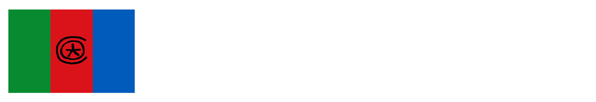
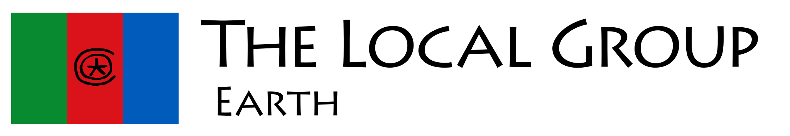
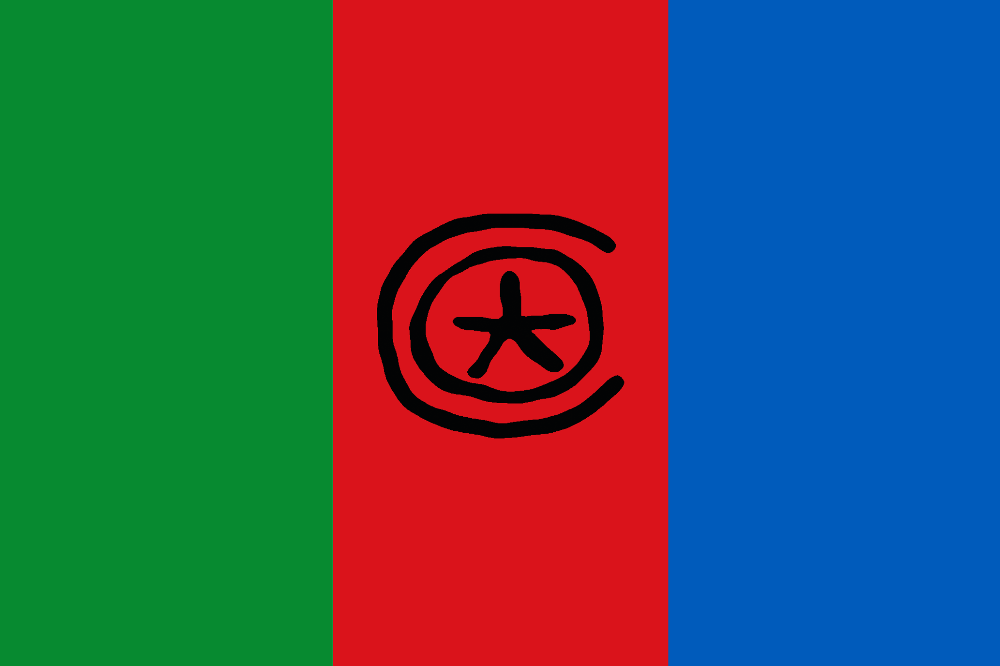
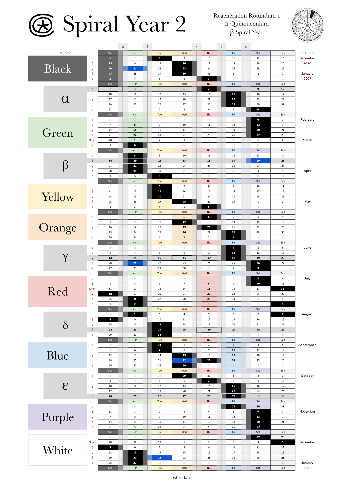
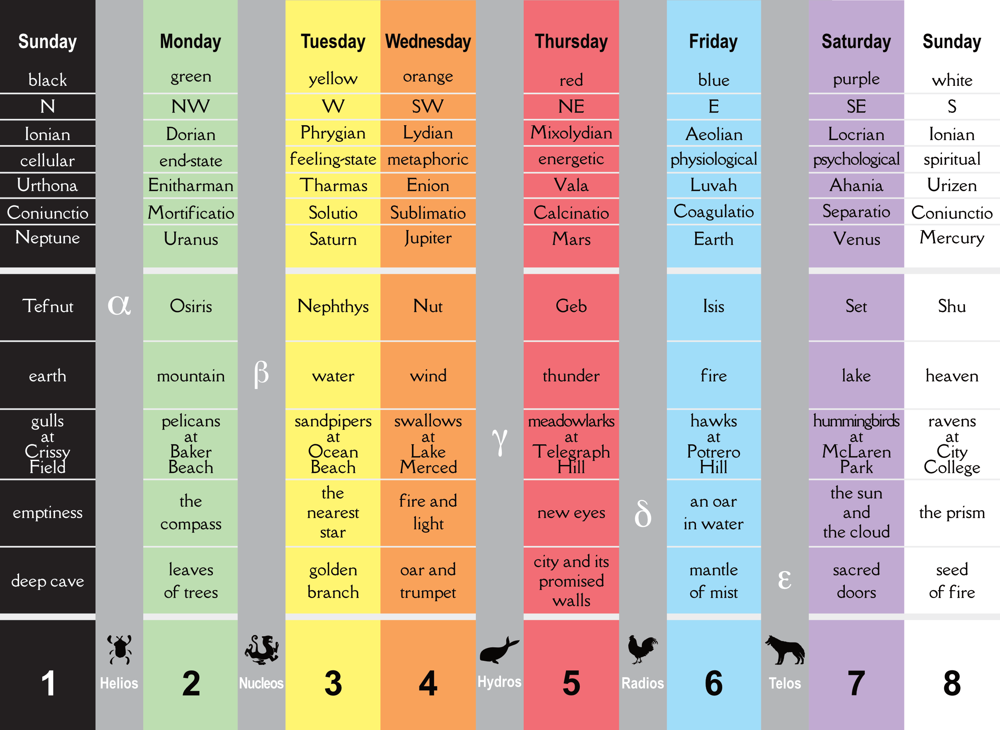

About
Created by Kevin Shrieve with Claude.
Contact: nfrhtp [at] tlg.earth
Far, far in the future, people live in multiple galaxies of the Local Group. Hungry for connection with Earth’s celestial rhythms and its ancient cultures, they evolve a game called “Spiral Tuning”. Locally, and across vast chronocommunication networks, many play this game together. These people call their intergalactic community “The Local Group”.
Chronode tech is weird. To be fully functional, each chronode relies on energy from a coherent, coordinated, creative local community. The people of The Local Group coordinate through COSTAR: Cycles Of Song, Theme, And Ritual. The game Spiral Tuning, well-played, is what makes chronocommunications work.
There is an initiative to build a chronode in our own time. If it is brought online, it will be the earliest chronode. But much remains unclear about this future tech, and will have to be worked out through inspiration, hunch, trial, and error. The Local Group, Earth, is supporting that quest.



The flag of The Local Group celebrates 3 facets of creation: multiplicity, self-reliance, and kinship.
The COSTAR symbol represents the light of reason, embracing a circle of wonder, pregnant with our emerging world soul.
COSTAR Regeneration Rotundum 1

COSTAR chromatic calendar
Rotundum 1, Spiral Year 2

Matrix of Themes
Alpha Centauri COSTAR System, San Francisco
Site visits counted anonymously, without cookies.
© 2026 Kevin Shrieve